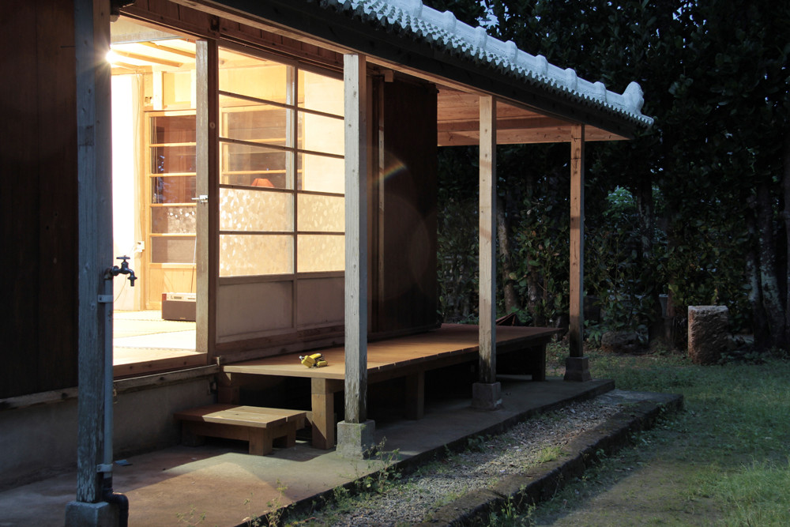
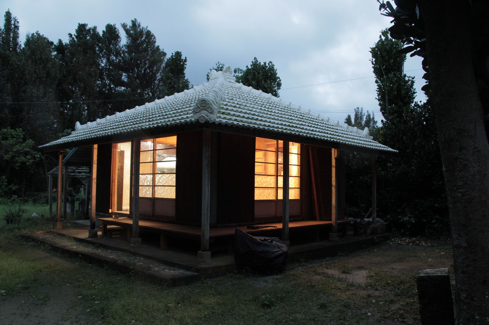
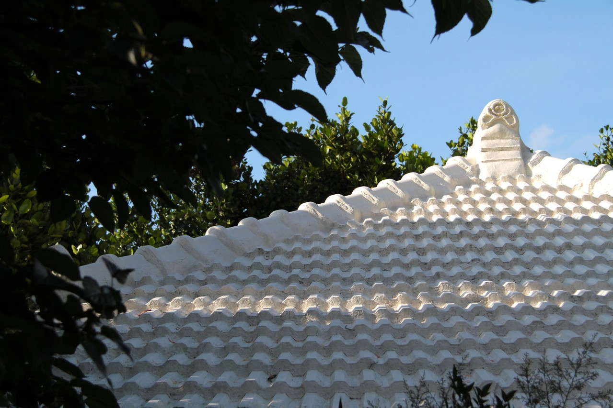
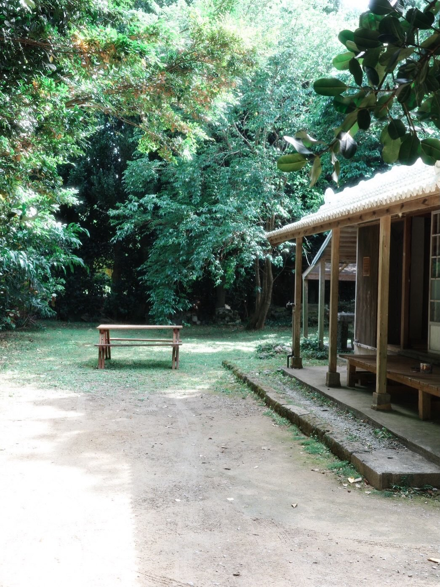
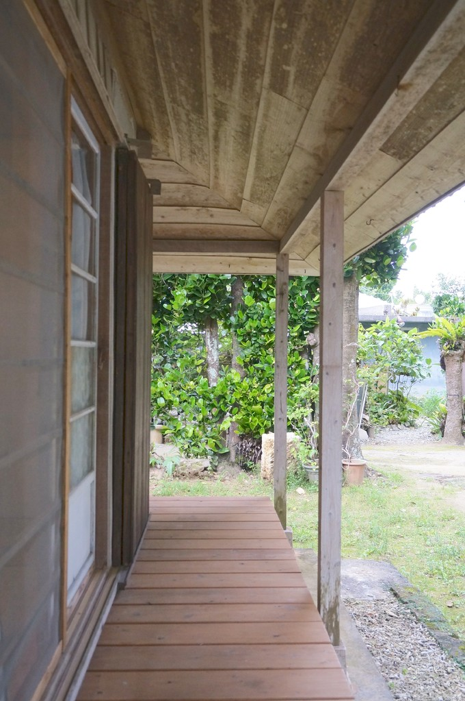
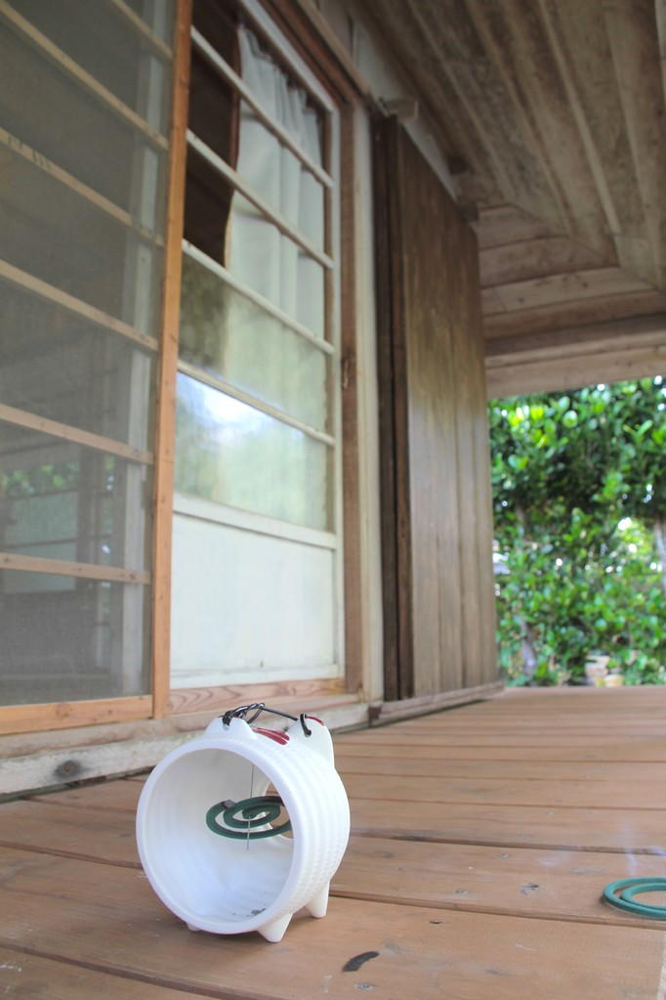
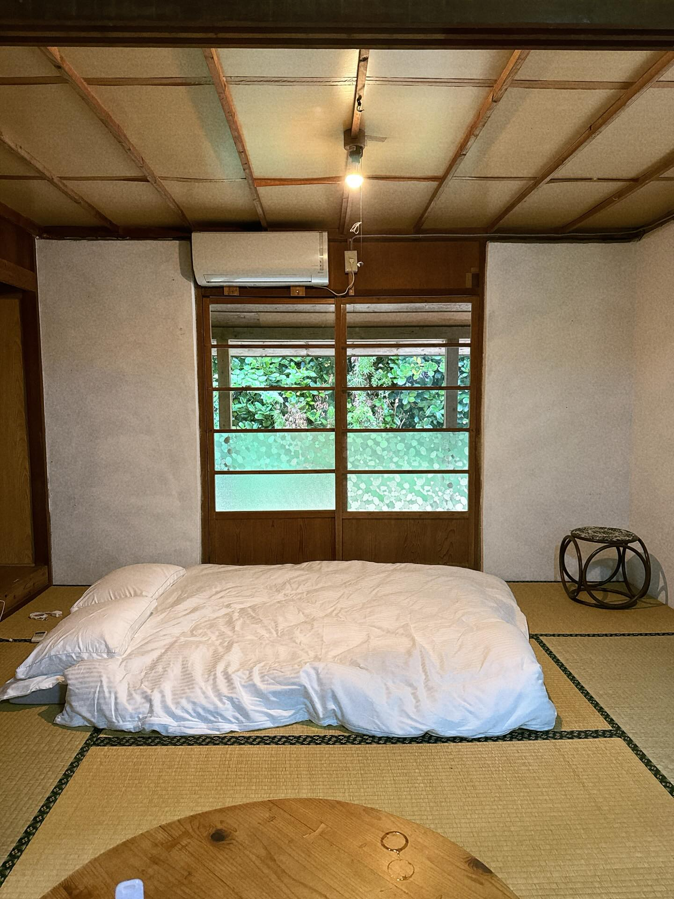
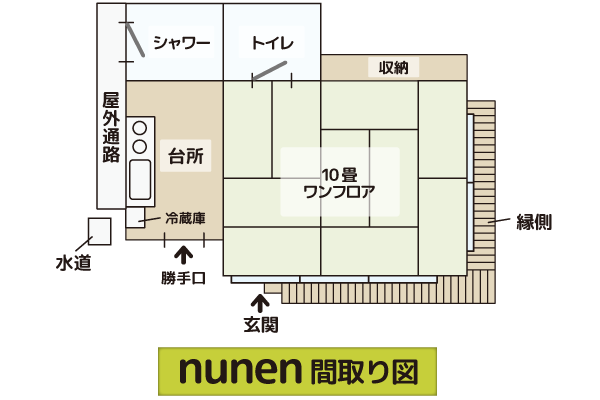
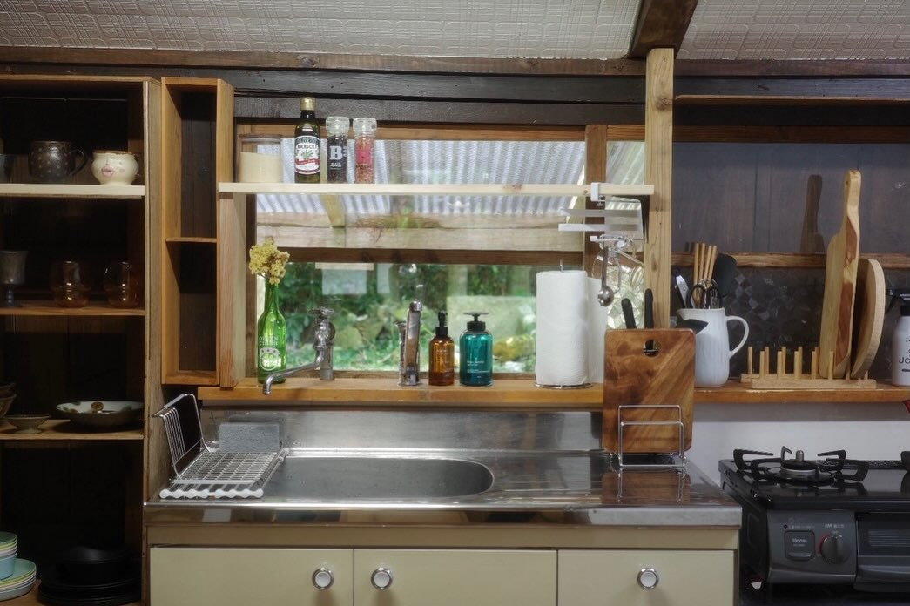

15:0015:00
15時、フクギの影が長くなる頃に着く。雨戸を開けると、畳のなつかしい匂いがした。Arrive around three, when the fukugi shadows grow long. Open the shutters — the familiar scent of tatami.

NUNEN — NAKIJIN, OKINAWANUNEN — NAKIJIN, OKINAWA
nunen＝沖縄の言葉で「なにもない」。今帰仁・今泊のフクギ集落に一棟。nunen means "nothing" in the Okinawan dialect. One house in the fukugi grove of Imadomar, Nakijin.
WHY "NUNEN"WHY "NUNEN"
「何もないことの美しさ」。初めて沖縄を訪れた岡本太郎は、そう書き残した。nunenは、その言葉から名前をもらった。フクギの森の奥で、白い漆喰屋根の下で予定のない時間を過ごす。"The beauty of having nothing." Taro Okamoto wrote these words on his first visit to Okinawa. Nunen takes its name from them. In the depths of the fukugi forest, beneath the white plaster roof, time passes without agenda.

FROM THE OWNERFROM THE OWNER
沖縄に帰りたくなるような気持ちを大事にしたお宿。そんな今帰仁村を感じにいらしてください。This inn was made to carry the feeling of coming back to Okinawa. Please come and feel Nakijin for yourself.
— nunen オーナー— nunen owner
A DAY AT NUNENA DAY AT NUNEN

15時、フクギの影が長くなる頃に着く。雨戸を開けると、畳のなつかしい匂いがした。Arrive around three, when the fukugi shadows grow long. Open the shutters — the familiar scent of tatami.

日が落ちる。障子の内側に灯りがともる。庭に出て空を眺めた。The sun goes down. Light glows behind the shoji. Step into the garden and look up at the sky.

朝は鳥の声で目が覚める。フクギ越しの光を眺めてぼーっとする贅沢な時間。ビーチまでは歩いてすぐ。Wake to birdsong. Watch the light filter through the fukugi — the luxury of doing nothing. The beach is a short walk away.
HONESTLYHONESTLY
夏は蚊がいます。シャワーは建物の外、天井は低く、台所の道具も新しくはない。それでも来て良かったと言ってくれる人がいます。There are mosquitoes in summer. The shower is outside, the ceilings are low, the kitchen tools are not new. Even so, there are people who leave glad they came.
「ここに一度でも来てみなければ、この体験がいかに静寂なものかは到底理解できないでしょう…一生に一度のことです。」"Unless you've been here at least once, you simply cannot understand how still and quiet this experience is… It is a once-in-a-lifetime thing."
—— Googleマップ 口コミより—— Google Maps review

THE HOUSETHE HOUSE



ペットの同伴は事前にご相談ください。Please contact us in advance if you are bringing a pet.
VOICESVOICES
「ふくぎの木に囲まれ、美しいビーチまで歩いてすぐ。昔の沖縄にタイムスリップするような体験ができます。沖縄で癒されたいかたにおすすめです❗」"Surrounded by fukugi trees, with a beautiful beach just a short walk away. It feels like stepping back in time to old Okinawa. Highly recommended for anyone looking for healing in Okinawa ❗"
「沖縄の伝統的な家に泊まってみたい方には、絶対にお勧めです。庭も広くて、焚き火台もあります。」"Absolutely recommended for anyone who wants to stay in a traditional Okinawan house. The garden is spacious and there's a fire pit."
Google口コミ ★4.6Google Maps ★4.6
ACCESSACCESS
ご質問だけでも構いません。Questions alone are welcome.